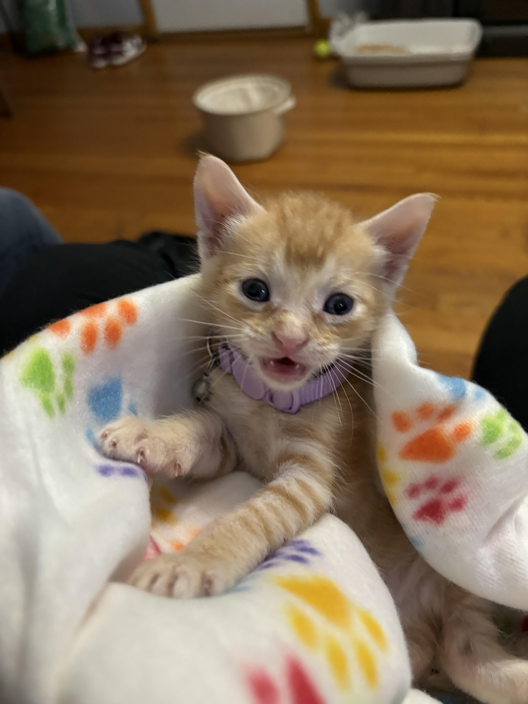

My name is Leslie Esquivel, I am a fourth year Computer Science student. I am in the Coterminal Program pursing my Masters Degree in ITM. My programming experience consists of languages I have learned in other computer science classes such as R, Python, and OCaml. I took ITMD361 where I learned the basics of HTML and CSS and briefly covered JavaScript.
I am 21 years old, and plan on graduating Spring 2026. I am the second oldest in my family, with an older brother and a younger sister and brother. I recently adopted a kitten who's name is Cheeto (he is orange, like a Cheeto). I am an adventurous person, often being referred to an adrenaline junkie. I love rollercoasters and have been skydiving twice already.
Music Interests:
Hobbies:
Favorite TV Shows:
ITMD541 is about Web Application Foundations. So far, we have covered the history of the internet, along with the history and introduction of HTML and CSS. From my personal experience, I learned the basics of the HTML and CSS with a very basic understanding of JavaScript. I believe I still need a lot of improvement with HTML and CSS but know that will come with practice. I also have experience with the basics of different programming languages such as Python, R, and Java. Currently in another class I am learning OCaml. I am excited to be able to practice HTML and CSS more, along with getting to understand JavaScript more thoroughly.
I am excited to be able to practice HTML and CSS more, along with getting to understand JavaScript more thoroughly.
Cheeto is the name of my kitten. He was born on July 17th, 2024. I adopted him when he turned 5 weeks old. He just turned 8 weeks this week. He is very playful and his favorite toy is blue and orange ball with a bell in the middle. I hear him play with it at 4 in the morning. My kitten is also smart enough to have learned how to use the litter box. My next goeal is to teach him to be comfortable on leasher
